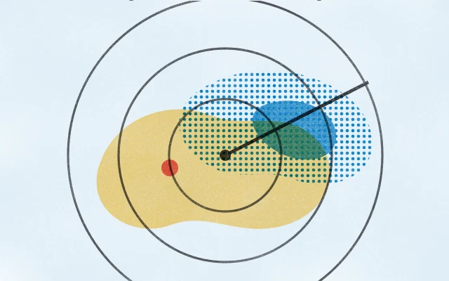
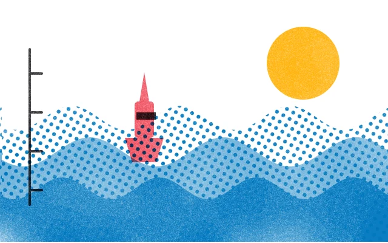
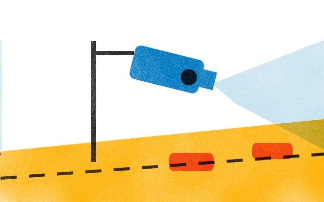

Loket 01
Cuaca dan Laut
Loket ini memuat radar hujan, tinggi gelombang, dan kamera lalu lintas untuk Batam dan perairan sekitarnya. Datanya diperbarui otomatis.
Saat ini
Hujan ringan di Kecamatan Bulang dan Belakang Padang. Gelombang rendah, sekitar 0,5 m, di perairan Batam. Angin 4 km/jam dari barat laut.
Radar pukul 09.40 WIB · prakiraan berlaku sampai pukul 10.00 WIB
Isi loket ini

01Radar HujanHujan dalam 2,5 jam terakhir, diperbarui setiap 5 menit.Langsung · citra pukul 09.40 WIB
02Tinggi GelombangPrakiraan gelombang dan angin di perairan Batam.Prakiraan berlaku sampai pukul 10.00 WIB
03CCTV Lalu LintasKamera lalu lintas di 28 titik jalan utama Batam.28 titik kameraJadwal feri dan pompong ada di Transportasi.